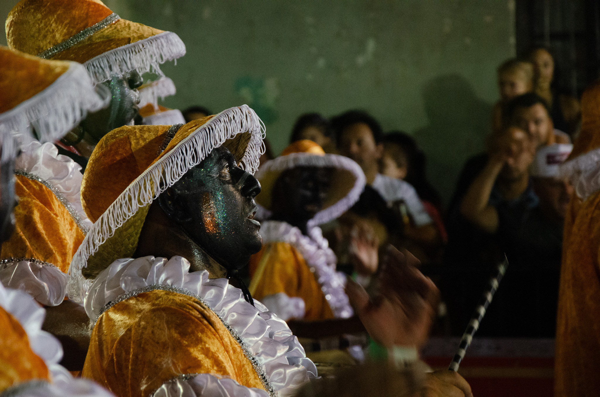

Proyectos Fotograficos
Durante los años pude desarrollar un catalogo profesional de imágenes comisionadas por varios grupos. Me desempeñe como retratista y fotógrafo de eventos como partidos de futbol, recitales y de las llamadas de barrio sur.
Football
Llamadas 2023
